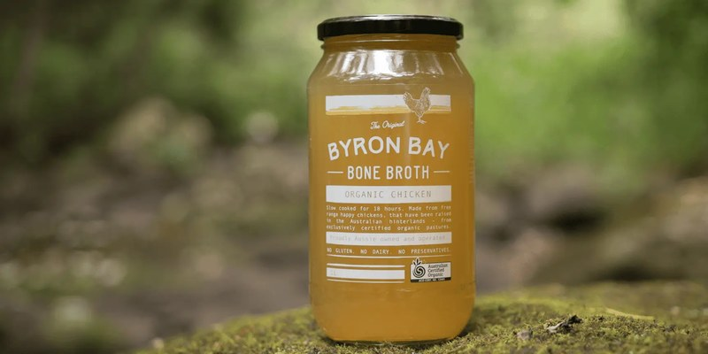
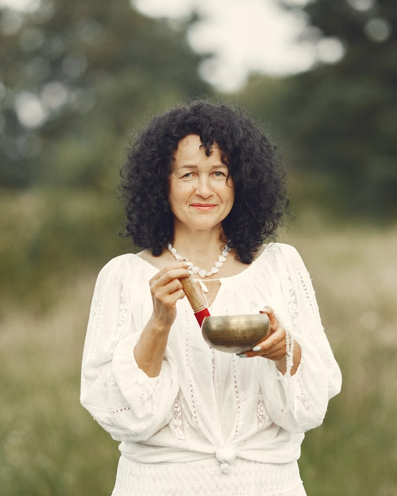
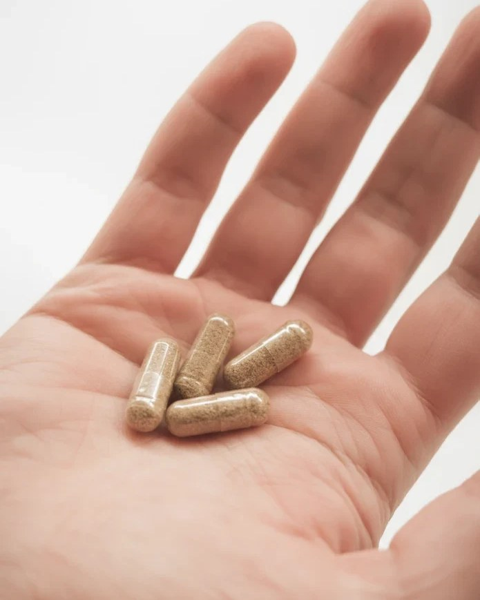
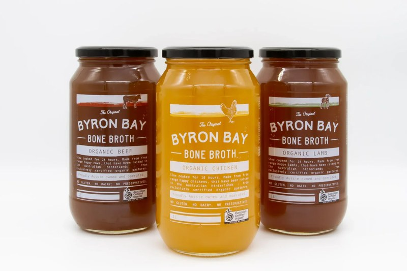
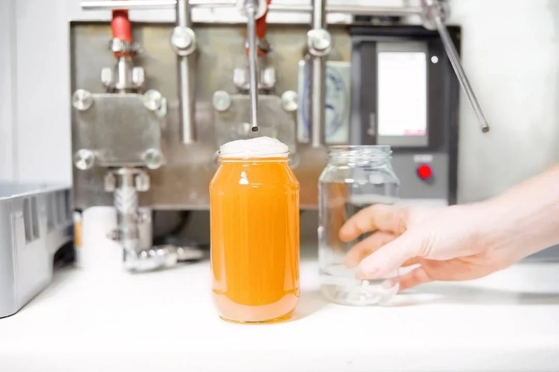
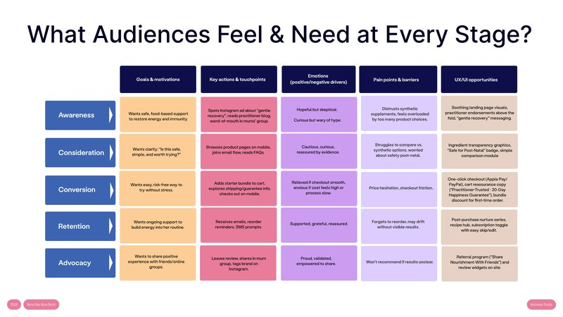
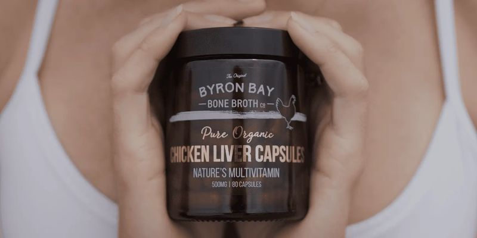
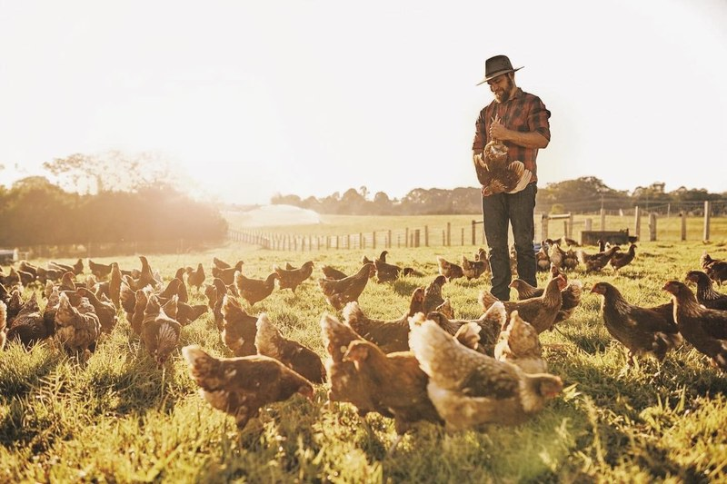
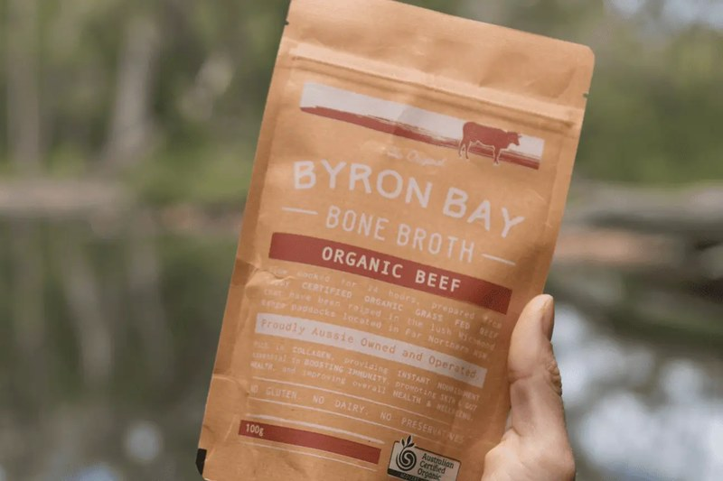

Byron Bay Bone Broth
B2B Channel Development | Product Campaigns | Customer Research & Digital Experience
Connecting commercial growth with a better understanding of the customer

The brief
Byron Bay Bone Broth is an Australian wholefood and wellness business. Our engagement coincided with the launch of chicken liver capsules and dehydrated bone broth. Consumers, specialty retailers and health practitioners each needed something different from the brand, so the task was both commercial and experiential: open new routes to market, and improve how the brand spoke to each audience online.
Our approach
Antimony's engagement combined two connected programmes.
Product launch & channel development
Chapter one approach
- Market research. Identifying suitable retail and practitioner audiences, and where the new products could find a market.
- Campaigns. B2B and B2C launch campaigns for the new products, speaking to consumers, retailers and practitioners.
- Partners. Researching stockists and practitioners and supporting introductions, alongside ambassador and partnership activity.




Customer experience & digital optimisation
Chapter two approach
- Research and segmentation. Customer motivations, objections and information needs, building a clearer view of each audience.
- Journey mapping. Touchpoints and trust signals across awareness, consideration, purchase and repeat engagement.
- UX and CRO audit. Home page, navigation, product pages and conversion paths, developed into prioritised recommendations.


My contribution
I managed the senior client relationship across both programmes. For the launch, I contributed to campaign strategy, researched and identified prospective retailers and practitioners, made the initial introductions and coordinated campaign assets with Antimony's creative team. I collaborated on the product and pricing strategy and the practitioner proposal. The client's sales team handled final negotiations and account conversion.
I led the CX research and strategy, including the competitor audit, audience segmentation and customer journey report. With Antimony's Chief Strategist and Marketing Coordinator, I turned the findings into prioritised digital recommendations, which were implemented after user acceptance testing.


Services & deliverables
- Retail and practitioner market research
- B2B and B2C launch campaigns
- Partner identification and introductions
- Customer research and segmentation
- Journey and lifecycle mapping
- E-commerce UX and CRO audit
Outcome
- From around 20 to 48 stockists
The active stockist network grew from around 20 locations to 48, including 10 health practitioners, with account conversion by the client's sales team. The CX recommendations were implemented after user acceptance testing, connecting channel growth with a better informed customer experience.